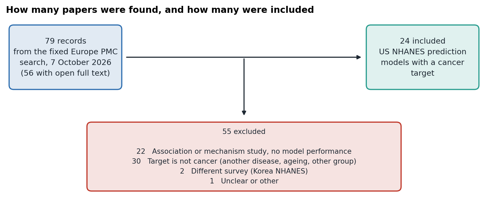
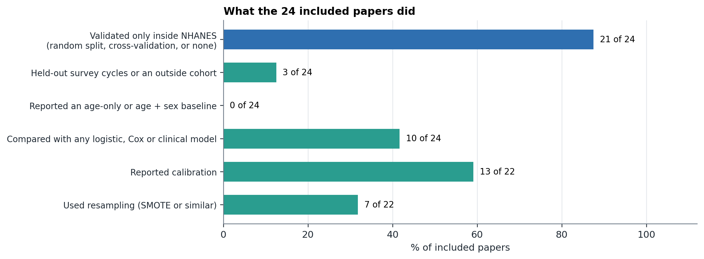
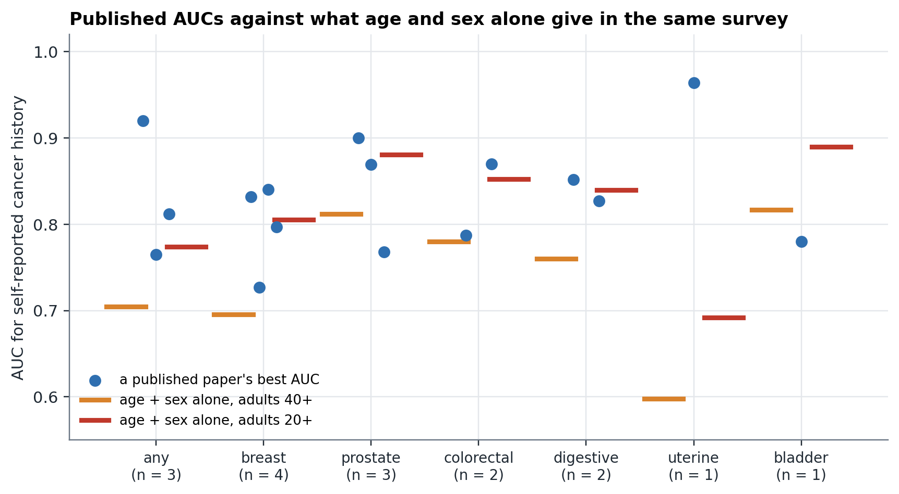
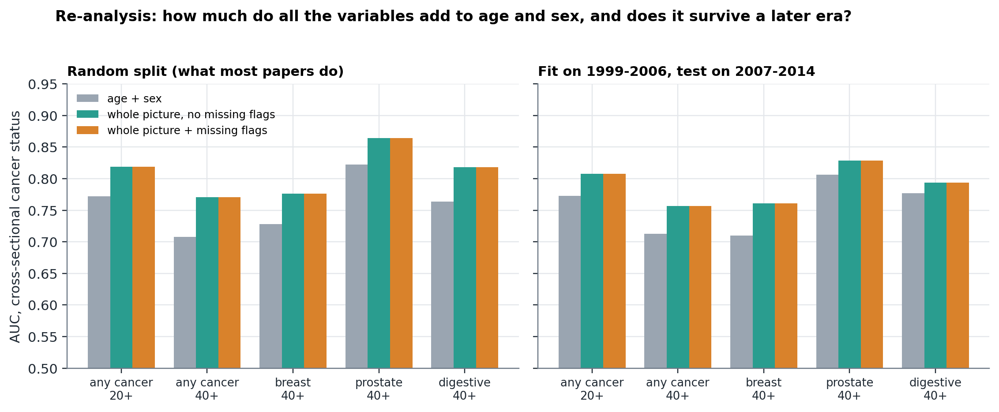
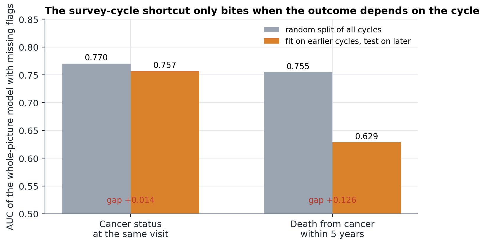
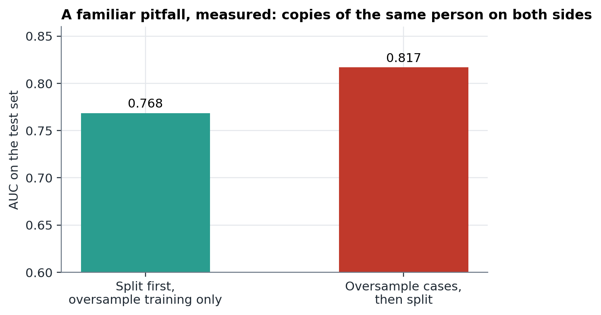

Background. The US National Health and Nutrition Examination Survey (NHANES) is the data behind a large and growing number of machine-learning papers that claim to predict or detect cancer. Whether those claims are tested against the obvious baseline, age, and validated beyond the pool of data they were built on has not, to our knowledge, been measured.
Methods. We pre-registered a fixed search and four claims before coding any paper. A Europe PMC search on 7 October 2026 returned 79 records, 56 with open full text. Every record was screened; 24 US-NHANES papers that built a model with a cancer target were coded for validation design, baselines, calibration, resampling and reported performance. We then re-analysed the task most of them use, predicting self-reported cancer history from other items recorded at the same visit, in 43,740 adults across eight survey cycles, with age and sex alone as the baseline and a later survey era held out.
Results. 21 of 24 papers (88%) validated only inside NHANES with no external cohort and no held-out cycle. None of the 24 reported an age-only or age-and-sex baseline that we could find, and 10 compared with any simpler model. Reported best AUCs for cancer status had a median of 0.84; 5 of 23 papers reported 0.90 or more. In our re-analysis age and sex alone gave AUC 0.71 (adults 40 and over) to 0.77 (adults 20 and over), and using about 200 variables raised it by 0.062 to 0.770, and to 0.757 in a later era. No analysis we ran reached 0.90 for any cancer. The prediction that missing-value flags would hurt a model in a later era was not supported for cancer status (AUC gap +0.014) although the flags predict survey cycle with AUC 0.94; in our companion mortality analysis the same shortcut cost 0.13 AUC. Two of four pre-registered claims were supported.
Conclusions. In this literature, internal-only validation without an age baseline is the norm, and many reported AUCs are high compared with what a large honest pipeline reproduces on the same survey. We propose an eight-item checklist for NHANES prediction papers, and a protocol that can be extended to the roughly 1,400 open-access papers a broader search returns.
Public health surveys are attractive to machine-learning researchers: they are free, large and carry hundreds of laboratory, examination and questionnaire items. NHANES in particular supports hundreds of papers a year, and a visible share of them claim that an algorithm can predict, detect or classify cancer. These claims matter because the people who read them include clinicians, funders and students deciding which approaches to build on.
Three problems are well known in prediction research generally. A model must be shown to beat the simplest sensible baseline, and for cancer that baseline is age, which on its own ranks cancer status and cancer death well.1 It must be validated on data that played no part in building it, ideally from another time or place.2 And every step that learns from data, such as imputation, feature selection and resampling, must be fitted inside the training data only.3 A systematic review of machine-learning prediction studies found 87% at high risk of bias, mostly in the analysis.4 A 2026 scoping review of 16 methodological papers proposed a guideline for the survey design of NHANES-type data, covering sampling weights and design-based validation.5
What we could not find is a measurement, in one literature, of how often these problems occur, and a check of what they cost on the data in question. NHANES adds two things of its own. Its cancer information is mostly a self-reported history recorded at the same visit as the predictors, so a model can learn what being a cancer survivor looks like rather than what precedes cancer. And it is released in two-year cycles whose questionnaires and laboratory methods change, so patterns of what was asked or measured can identify the cycle.
This paper reports a pre-registered audit of NHANES machine-learning papers with a cancer target and a controlled re-analysis on the task they most often use. We set four claims and their criteria in advance and report them whether or not they held.
The search, the inclusion rule, the coding items and four claims with the results that would count as support were committed to the project repository on 7 October 2026 (docs/AUDIT_PREREG.md) before any paper was coded and before the re-analysis was run. Two choices were made after that and are listed in Section 4.3.
Europe PMC, searched on 7 October 2026 for records from 2015 to 2026 whose abstracts mention NHANES (or its full name), a machine-learning term (machine learning, deep learning, random forest, XGBoost, gradient boosting, neural network, support vector) and a cancer term. The full query is in the pre-registration. It returned 79 records, 56 with open full text. There was no sampling: every record was screened. A paper was included if it used US NHANES and built, trained or reported a prediction or classification model with reported performance whose target was cancer at any site, or death from cancer. Excluded were association-only analyses where machine learning only ranked variables, models of other diseases, studies of the Korean survey (KNHANES), mechanistic and omics studies, and methods papers. Each of the 55 exclusions has a recorded reason.
Each included paper was coded for the task (cancer status recorded at the same visit, mortality, comorbidity), the validation design (random split, cross-validation only, none described, or held-out NHANES cycles or an outside cohort), whether an age-only or age-and-sex baseline was reported, whether any simpler comparator was reported, the best reported AUC, whether survey weights were used when fitting, calibration, resampling and any stated leakage guard. A first pass applied regular-expression cues to the text; a second pass read the abstract and the sentences the cues returned and decided each code. The second pass is the one reported. Items that need the methods section were marked not assessable for the 4 included papers with only an abstract available.
The cue rules and the adjudicated codes were compared (Table 5). The adjudication was done by an AI assistant, not by two independent humans, and is the main limitation; the 15 papers listed in Appendix A were chosen at random for a human to re-code.
We built the task most papers use: predicting a person's self-reported answer to "Has a doctor ever told you that you had cancer?" from the other items recorded at the same visit, in adults from the eight continuous NHANES cycles 1999-2014 (43,740 adults, 4,029 with a cancer history). Predictors were about 200 laboratory, examination and questionnaire columns, plus an indicator for each column that was partly missing. Cancer-history questions were never predictors. For each task we compared (a) age and sex, (b) all variables without missing flags, and (c) all variables with missing flags (gradient boosting, depth 3, 300 trees), in a random 70/30 split, the usual choice in the audited papers, and in a split that fits on 1999-2006 and tests on 2007-2014. Site-specific tasks (breast, prostate, colorectal, digestive, uterine, bladder) used the cancer type recorded in the survey, with people without cancer as controls.
The age-only AUC for each site, five-fold cross-validated in adults 40 and over and in adults 20 and over, was compared with each audited paper's best reported AUC for that site. The verdict for claim A3 uses the adults 40 and over baseline, which is lower and so favours the papers. We also measured two mechanisms: how well the missing-value flags alone predict the survey cycle, and the inflation from duplicating cases before the train-test split.

24 papers from 2024 to 2026 were included (20 with full text). 17 predicted cancer status at the same visit, 2 a diabetes-cancer or heart disease-cancer comorbidity, and 5 cancer death or survival. Sites were any cancer (10), breast (4), prostate (4), colorectal (2), digestive (2), and uterine and bladder (one each).
| # | Claim | Result | Verdict |
|---|---|---|---|
| A1 | At least half validate only inside one pool of data | 21 of 24 (88%; 95% CI 0.69 to 0.96) used a random split, cross-validation or no described validation, with no external cohort and no held-out cycle | Supported |
| A2 | At most 20% report an age-only baseline | 0 of 24 (0%). 10 of 24 compared with some logistic, Cox or clinical-variable model | Supported |
| A3 | Median reported AUC for cancer status is within 0.05 of the age-only AUC | Median gap +0.089 against age and sex alone in adults 40+ (the pre-set, conservative baseline), +0.002 in adults 20+ | Not supported (depends on the age range, which most papers do not state) |
| A4 | Whole-picture models lose at least 0.03 AUC in a later-cycle split and missing flags identify the cycle | Gap +0.014 for cancer status; flags predict the cycle with AUC 0.94 | Not supported for cancer status (the cycle shortcut is real but does not hurt here) |
Written down in docs/AUDIT_PREREG.md before any paper was coded.
Of 24 papers, 13 used a single random split, 4 cross-validation only, 6 described no validation, and 1 mentioned a test set without saying how it was made. Three had any external cohort, in each case a Chinese hospital cohort, and one of those three also used earlier NHANES cycles as a held-out set. 20 papers had full text; among them 85% had no external cohort or held-out cycle.
No paper had an age-only or age-and-sex-only baseline. Ten compared with some other simple model: logistic regression, a Cox model, or a clinical-variables model that usually included age but also other things. Calibration was reported in 13 of 22 assessable papers. Resampling such as SMOTE was used in 7 of 22; of those, 2 of 7 stated that resampling was confined to the training data. Survey weights were used in model fitting in none of the papers where this could be assessed; several used weights only for the descriptive or association analysis.

Best reported AUCs ranged from 0.67 to 0.996. For papers predicting cancer status the median was 0.836 (interquartile range 0.790 to 0.893). 5 of 23 papers reported 0.90 or more, for dietary antioxidants and comorbidity, uterine cancer, heart disease and cancer comorbidity, a social-determinants model and caffeine and prostate cancer. Figure 3 places each against the AUC that age and sex alone give for the same site in the same survey.

| PMID | Year | Cancer site | Task | Validation inside NHANES | External cohort or held-out cycle | Comparator model | Best AUC |
|---|---|---|---|---|---|---|---|
| 39700695 | 2025 | any | comorbidity | cross-validation | no | yes | 0.951 |
| 42058226 | 2026 | any | comorbidity | none described | no | no | 0.996 |
| 38142591 | 2024 | any | mortality | none described | no | yes | 0.850 |
| 40405088 | 2025 | any | mortality | random split | no | no | 0.891 |
| 42180936 | 2026 | any | mortality | random split | no | yes | 0.840 |
| 41386362 | 2026 | any | mortality | cross-validation | no | yes | 0.674 |
| 42200020 | 2026 | prostate | mortality | none described | yes | yes | 0.751 |
| 38277522 | 2024 | bladder | status | none described | no | no | 0.780 |
| 38329808 | 2024 | breast | status | none described | no | no | 0.840 |
| 41366988 | 2025 | prostate | status | none described | no | no | 0.900 |
| 39928823 | 2025 | any | status | random split | no | yes | 0.920 |
| 40716343 | 2025 | prostate | status | test set (unstated) | no | no | 0.869 |
| 40697552 | 2025 | prostate | status | random split | no | no | 0.768 |
| 40730969 | 2025 | breast | status | cross-validation | no | no | 0.797 |
| 41299673 | 2025 | colorectal | status | random split | no | yes | 0.870 |
| 40190762 | 2025 | any | status | random split | no | no | not stated |
| 39779803 | 2025 | digestive | status | random split | no | no | 0.827 |
| 42260815 | 2026 | colorectal | status | random split | no | no | 0.787 |
| 42332450 | 2026 | uterine | status | random split | no | yes | 0.964 |
| 42528994 | 2026 | breast | status | random split | yes | no | 0.832 |
| 42638646 | 2026 | digestive | status | random split | yes | yes | 0.852 |
| 42459460 | 2026 | breast | status | random split | no | no | 0.727 |
| 41560104 | 2026 | any | status | random split | no | no | 0.765 |
| 42701956 | 2026 | any | status | cross-validation | no | yes | 0.812 |
AUC is the best test-set value the authors report for the cancer target (C-index for survival models). Papers are identified by PubMed ID so each can be looked up and re-coded.
For any cancer in adults 40 and over, age and sex alone gave AUC 0.708 in a random split. Adding about 200 variables raised it to 0.770 (bootstrap 95% interval for the gain +0.052 to +0.074), and in the later-cycle split from 0.713 to 0.757. In adults 20 and over the baseline was higher (0.772) and the full model reached 0.819. So other things recorded at the same visit do help predict cancer history, by about 0.05 to 0.06 AUC, which is plausible: cancer survivors differ from other people in their health, medicines and use of care. The sites told the same story (Table 3, Figure 4); for colorectal and bladder cancer the full model did not beat age and sex.

| Task | People | Cases | Random: age + sex | Random: all, no flags | Random: all + flags | Later cycles: age + sex | Later: all, no flags | Later: all + flags |
|---|---|---|---|---|---|---|---|---|
| any cancer, 20+ | 43,740 | 4029 | 0.772 | 0.819 | 0.819 | 0.772 | 0.808 | 0.808 |
| any cancer, 40+ | 28,565 | 3746 | 0.708 | 0.770 | 0.770 | 0.713 | 0.757 | 0.757 |
| breast, 40+ | 13,326 | 608 | 0.728 | 0.776 | 0.776 | 0.710 | 0.761 | 0.761 |
| prostate, 40+ | 12,701 | 600 | 0.822 | 0.864 | 0.864 | 0.806 | 0.828 | 0.828 |
| colorectal, 40+ | 25,103 | 284 | 0.823 | 0.809 | 0.809 | 0.788 | 0.788 | 0.788 |
| digestive, 40+ | 25,181 | 362 | 0.763 | 0.818 | 0.818 | 0.777 | 0.794 | 0.794 |
| uterine, 40+ | 12,862 | 144 | 0.613 | 0.618 | 0.618 | 0.572 | 0.598 | 0.598 |
| bladder, 40+ | 24,906 | 87 | 0.843 | 0.827 | 0.827 | 0.837 | 0.779 | 0.779 |
AUC. Later-cycle split: fit on 1999-2006, test on 2007-2014. 'All' is about 200 laboratory, examination and questionnaire columns, gradient boosting. Cells marked n/a had too few cases in a split.
| Task | AUC | Cases | People |
|---|---|---|---|
| any, 40+ | 0.705 | 3746 | 28,565 |
| breast, 40+ | 0.696 | 608 | 13,326 |
| prostate, 40+ | 0.812 | 600 | 12,701 |
| colorectal, 40+ | 0.780 | 284 | 25,103 |
| uterine, 40+ | 0.598 | 144 | 12,862 |
| bladder, 40+ | 0.817 | 87 | 24,906 |
| digestive, 40+ | 0.760 | 362 | 25,181 |
| any, 20+ | 0.774 | 4029 | 43,740 |
| breast, 20+ | 0.805 | 619 | 21,221 |
| prostate, 20+ | 0.881 | 600 | 19,709 |
| colorectal, 20+ | 0.853 | 288 | 39,999 |
| uterine, 20+ | 0.692 | 164 | 20,766 |
| bladder, 20+ | 0.890 | 88 | 39,799 |
| digestive, 20+ | 0.840 | 368 | 40,079 |
Used for the per-paper comparison in Figure 3.
Against these benchmarks, the highest AUC our full pipeline reached for any site and split was 0.864 (prostate cancer, random split). Reported AUCs of 0.90 or more for any cancer, uterine cancer or comorbidity are therefore well above what this much larger honest analysis produces on the same survey. That does not show those results are wrong: the papers used different samples, age ranges and definitions. It shows they need explaining, and almost none of the papers reported a baseline that would let a reader judge.
The missing-value flags alone predict which survey cycle a person is from with AUC 0.937, so the cycle is encoded in them. For cancer status, however, that did not hurt a later-cycle test: the whole-picture model scored 0.770 in a random split and 0.757 in the later-cycle split, a gap of +0.014. Claim A4 was therefore not supported. In our earlier work on death from cancer within five years the same kind of model fell from 0.755 in a random split to 0.629 in a later-cycle split. The difference is that survival outcomes depend on follow-up and baseline mortality, which differ by cycle, while a lifetime history of cancer does not. The shortcut costs something only when the outcome varies with the cycle.

Duplicating cases to balance the classes before the train-test split puts copies of the same person on both sides. In a controlled test on the same task this raised test AUC from 0.768 (oversampling the training set only) to 0.817, an inflation of 0.048. It is modest here because the model was regularised; with a more flexible model, or other leakage routes such as selecting variables on all the data, it could be larger. We did not determine the order of steps in any audited paper, apart from the 2 that stated a guard.

The automatic cue rules were a poor substitute for reading the text (Table 5): they agreed well with the adjudicated codes only for calibration and moderately for random splits and resampling, and poorly for external validation and survey weights. This is why the audit relies on the adjudicated codes and why a human second coder matters.
| Item | Cohen's kappa | Raw agreement |
|---|---|---|
| external or held-out cycle | 0.25 | 0.62 |
| random split or CV described | 0.71 | 0.88 |
| age-only baseline | 0.0 | 0.88 |
| survey weights in text | 0.0 | 0.58 |
| calibration | 1.0 | 1.0 |
| resampling | 0.73 | 0.88 |
Kappa is zero or low where almost all papers were coded the same way (a kappa of 0 for the age-only baseline reflects that no paper had one).
The two claims about practice were supported strongly. Almost nine in ten of the audited papers validated their models only inside NHANES, and none reported the baseline that would show what the model adds. The median reported AUC for predicting a person's cancer history from the rest of the visit was 0.84; age and sex alone gave 0.71 to 0.77, and a much larger honest analysis reached 0.76 to 0.82. A reader seeing 0.84 with no baseline cannot tell whether that is a good model or a good guess about age.
The two claims about the mechanism were not supported as stated. The survey-cycle shortcut exists, but for lifetime cancer status it did not cost anything in a later cycle. Reported AUCs were not "no better than age" under the pre-set baseline; the answer depends on the age range of each paper's sample, which most did not state clearly enough to match. We report this plainly: the stronger version of our hypothesis, that published performance is largely an age effect, was not borne out by this audit, and what is left is the narrower finding that baselines and external validation are absent and that some reported values are hard to reproduce.
From the audit and the re-analysis we propose eight items for papers that predict cancer from NHANES-type data. They are not new principles; they are the ones that the audited papers most often did not meet.
The risk-of-bias review of machine-learning prediction studies found most at high risk of bias in the analysis;4 this audit is consistent with that and narrows it to one dataset and one outcome. The survey-aware guideline5 addresses weights and design; our checklist adds baselines, age-range matching, outcome timing and cycle-held-out validation. Leakage as a cause of unreproducible machine-learning results has been documented across fields;3 here we measured one such route on this survey. We did not find a prior audit of this kind for NHANES and cancer, but a short search does not show that none exists.
This study was carried out with an AI assistant (Anthropic Claude, via Claude Code), which wrote the search, extraction and analysis code, read and coded the papers, ran the re-analysis and drafted the text. An AI cannot be an author. The human author set the question, is responsible for the work, and must verify the coding and every statement before submission.
The re-analysis uses public, de-identified NHANES data and NCHS mortality files; no participants were contacted. Search records, adjudicated codes, exclusion reasons, code and results are in the public repository (github.com/palashraks-afk/OncoVision). Copyrighted full text is not redistributed. Clinical mentorship and authorship are not asserted here.
None declared. No funding.
References 1 to 4 and 6 were looked up by title in Crossref and match. Reference 5 is a preprint read from its arXiv abstract page. Reference 7 is a data product.
Fifteen included papers chosen at random (seed 7) from the 24. PubMed IDs: 42260815, 41366988, 38277522, 40716343, 42332450, 40190762, 42459460, 38329808, 41386362, 42058226, 39779803, 39928823, 41299673, 40697552, 38142591. A reviewer who codes them independently would allow a human-versus-AI kappa to be added.
| PMID | Reason |
|---|---|
| 42629713 | association analysis; ML only ranks variables, no model performance |
| 42192026 | Korea NHANES (KNHANES), a different survey; target is psychological distress |
| 41007166 | target is sarcopenic obesity, not cancer |
| 41013410 | target is insulin resistance |
| 41531742 | target is dietary fat |
| 41371087 | targets stroke and mortality |
| 41223197 | target is fatty liver |
| 41670835 | target is cardiovascular death among cancer survivors |
| 41484685 | target is all-cause mortality in CVD-cancer comorbidity |
| 41534354 | mechanistic study, no prediction performance |
| 42536197 | target of the models not clearly cancer; abstract only |
| 40874812 | target is multimorbidity |
| 41882235 | target is CVD in cancer survivors |
| 40931290 | target is benign prostatic hyperplasia |
| 41451124 | target is osteoporosis |
| 41592398 | single-marker association; no model performance reported in the abstract |
| 41637463 | target is depression |
| 40415396 | Mendelian randomisation and omics; unclear |
| 41187199 | association study; single marker |
| 42670686 | mortality association in kidney disease |
| 42305524 | association study |
| 40963229 | association study |
| 41013668 | target is asthma |
| 40669089 | clustering and association |
| 40349028 | target is mortality in rheumatoid arthritis |
| 40262223 | association study (environment-wide) |
| 42617515 | omics |
| 40883416 | mechanistic cell study |
| 40988252 | target is asthma |
| 42560444 | omics and genetics |
| 39678170 | statistical method paper |
| 40478960 | association, no model performance in the abstract |
| 42768379 | chronic disease burden and all-cause mortality |
| 40357031 | association study |
| 39767532 | target is GI health in cancer survivors |
| 42446284 | single-index ROC; no ML model evident (abstract only) |
| 40206955 | hyperuricaemia in breast-cancer patients |
| 39104905 | hospital data primary; NHANES only supporting |
| 39240958 | target is lean mass |
| 42066461 | omics |
| 40741049 | biological age |
| 40636877 | target is emphysema |
| 41734845 | omics |
| 41997961 | microbiome age |
| 40218080 | target is sleep apnoea |
| 39102412 | target is kidney disease |
| 37710270 | target is albuminuria |
| 41252864 | target is benign prostatic hyperplasia |
| 35405939 | PSA association |
| 36429890 | Korea NHANES (KNHANES), a different survey |
| 37036281 | target is a high PSA level, not a cancer diagnosis |
| 35657782 | obesity drug use |
| 37161056 | association study |
| 39781526 | global burden and omics; unclear |
| 34415913 | simulation of HPV-related cancer, not NHANES prediction |